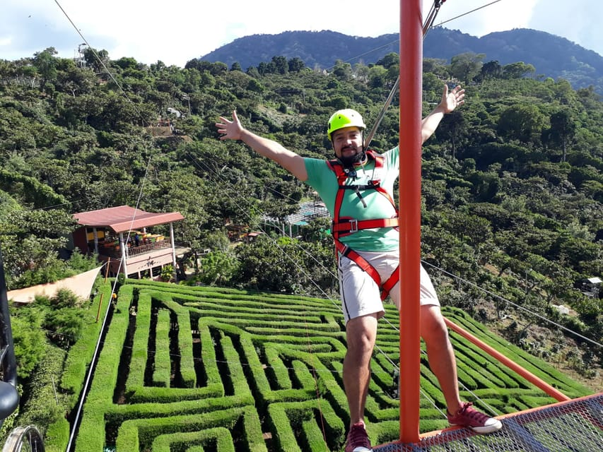
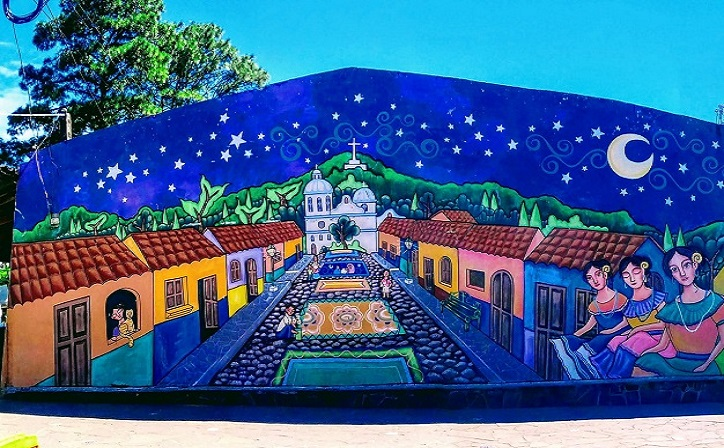

El Pital es la montaña más alta de El Salvador, con una altura aproximada de 2,730 metros sobre el nivel del mar. Está ubicado en el departamento de Chalatenango, en la frontera con Honduras.
Históricamente, esta zona fue utilizada como punto estratégico debido a su ubicación y difícil acceso. Con el paso del tiempo, se convirtió en un destino turístico reconocido por su clima frío, algo poco común en el país.
Actualmente es visitado por turistas que buscan acampar, disfrutar de paisajes montañosos y experimentar temperaturas que pueden descender hasta cero grados en ciertas épocas del año.

